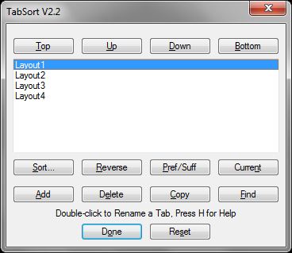
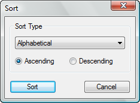
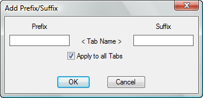
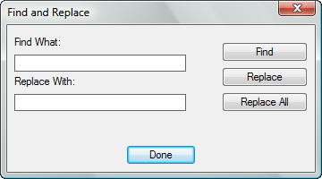

TabSort
This page is delivered for consistency purposes only, as part of the LeeMac sample module of DynALisp, which shows how DynALisp turns existing AutoLISP programs into a module. The program and its description are the work of Lee Mac, who keeps all the credit for them. The original page, with the latest version, is on Lee Mac's website: https://lee-mac.com/tabsort.html
| Function Syntax | LM-TabSort – original syntax: TabSort (see aliases) |
| Current Version | 2.2 |
| Compatible with AutoCAD for Mac? | No |
| Compatible with AutoCAD LT? | Yes |
| Original Page | lee-mac.com/tabsort.html |
Program Description
A program designed with the intention to aid in the organisation of layout tabs in a drawing, the program enables the user to organise each layout tab using intuitively engineered buttons to move selected tabs up/down or to the top/bottom of the tab order.
The program also offers the ability to rename a layout tab by double-clicking on its entry in the list displayed, and furthermore add a prefix and/or suffix to selected/every layout tab.
A facility is also provided to add & delete layout tabs, and also sort the tabs into alphabetical, numerical, or architectural order; or reverse the order currently displayed.
A Find & Replace functionality is also offered to allow the user to quickly replace a text string in multiple layout tabs.
The user may also copy selected layout tabs, or set the selected entry as the current drawing layout.
A Help Dialog may be shown upon pressing H at the Main Dialog interface.

Each item is further detailed in the table below.
| Button | Functionality |
|---|---|
| Move selected Tabs to the top of the list | |
| Move selected Tabs up one notch in the list | |
| Move selected Tabs down one notch in the list | |
| Move selected Tabs to the bottom of the list | |
| Opens the Sort Dialog (detailed below) | |
| Reverse the Tab order of Selected Tabs | |
| Opens the Prefix/Suffix Dialog | |
| Adds a new layout Tab | |
| Deletes selected Tabs (this action cannot be undone) | |
| Copies selected Tabs | |
| Makes the selected Tab the Current Drawing Layout | |
| Allows the user to perform a Find & Replace operation | |
| Finished sorting Tabs, will implement sorting | |
| Will reset Tab names and Tab order (will not reset deleted/added Tabs) |
Sorting

This program offers three sorting options: Alphabetical, Numerical & Architectural. Examples of their usage are shown below:
Alphabetical
( "A23" "C22" "B3" "E7" ) ==> ( "A23" "B3" "C22" "E7" )
Numerical
( "A23" "C22" "B3" "E7" ) ==> ( "B3" "E7" "C22" "A23" )
Architectural
( "A-1A" "B-3" "A-10C" "B-1.2" "B-1" ) ==> ( "A-1A" "A-10C" "B-1" "B-1.2" "B-3" )
Dialog Previews
Main Dialog
Prefix/Suffix Dialog

Find & Replace Dialog

Bundled program notes
;;--------------------=={ TabSort.lsp }==---------------------;;
;; ;;
;; A program designed with the intention to aid in the ;;
;; organisation of layout tabs in a drawing. ;;
;; ;;
;; The program enables the user to organise each layout tab ;;
;; using buttons to move the tabs up, down, to the top, and ;;
;; to the bottom of a list. ;;
;; ;;
;; The user may rename any layout by double clicking on it, ;;
;; and can also add a Prefix and/or Suffix to selected/every ;;
;; layout tab. ;;
;; ;;
;; The program offers the facility to add and delete a ;;
;; layout tab, and also sort the tabs alphabetically, ;;
;; numerically, architecturally; or reverse the order in ;;
;; which they appear. ;;
;; ;;
;; A Find and Replace function is incorporated to allow the ;;
;; user to quickly replace a text string in multiple tabs. ;;
;; ;;
;; The user can also Copy a layout tab, and set the Selected ;;
;; layout tab as the current tab. ;;
;; ;;
;; The Help Dialog can be access by pressing "H" at the Main ;;
;; Dialog. ;;
;; ;;
;;------------------------------------------------------------;;
;; ;;
;; FUNCTION SYNTAX: TABSORT ;;
;; ;;
;; Notes:- ;;
;; The Reset button will reset Tab Order and Tab Names, but ;;
;; will not affect newly created tabs and will not recreate ;;
;; deleted tabs. ;;
;; ;;
;; In the case that multiple tabs are selected, the Current ;;
;; button will set the tab with the lowest index (highest in ;;
;; the list) as the current tab. ;;
;; ;;
;;------------------------------------------------------------;;
;; Author: Lee Mac, Copyright © 2011 - www.lee-mac.com ;;
;;------------------------------------------------------------;;
;; ;;
;; With Thanks To: ;;
;; -------------------- ;;
;; Gilles Chanteau (Gile) ;;
;; ;;
;; For his fantastic contribution to the list manipulation ;;
;; required for multiple DCL selections, and effort towards ;;
;; the Architectural Sort functions. ;;
;; ;;
;;------------------------------------------------------------;;
;; Charles Alan Butler (CAB) ;;
;; ;;
;; For his excellent idea to incorporate the Help button for ;;
;; those who need it. ;;
;; ;;
;;------------------------------------------------------------;;
;; Version: ;;
;; ;;
;; 1.0 - 13th September 2009 ;;
;; ;;
;; First Release ;;
;;------------------------------------------------------------;;
;; 1.1 - 14th September 2009 ;;
;; ;;
;; Added Mnemonics to Tiles ;;
;; Added text to notify of double-click availability ;;
;; Added option to only pref/suff selected tab ;;
;;------------------------------------------------------------;;
;; 1.2 - 15th September 2009 ;;
;; ;;
;; Added Numerical Sort ;;
;; General Bug Fixes ;;
;;------------------------------------------------------------;;
;; 1.3 - 15th September 2009 ;;
;; ;;
;; Multi-tab Selection Functionality ;;
;;------------------------------------------------------------;;
;; 1.4 - 16th September 2009 ;;
;; ;;
;; Added Button to Set Current Tab ;;
;; Added Copy Tab Functionality ;;
;;------------------------------------------------------------;;
;; 1.5 - 17th September 2009 ;;
;; ;;
;; Fixed Bug to Copy Layout Plot Settings ;;
;;------------------------------------------------------------;;
;; 1.6 - 18th September 2009 ;;
;; ;;
;; Modified Action_Tile Stmts ~ Thanks VovKa ;;
;; Added Architectural Sort Button ;;
;;------------------------------------------------------------;;
;; 1.6.1 - 19th September 2009 ;;
;; ;;
;; Fixed Bugs ~ Thanks for feedback CAB ;;
;;------------------------------------------------------------;;
;; 1.7 - 20th September 2009 ;;
;; ;;
;; Added Find & Replace Functionality ;;
;; Organised buttons/Added Sort Dialog ;;
;;------------------------------------------------------------;;
;; 1.7.1 - 20th September 2009 ;;
;; ;;
;; Replaced StrBrk sub with SplitStr (Gile) ;;
;;------------------------------------------------------------;;
;; 1.8 - 21st September 2009 ;;
;; ;;
;; Added hidden Help Button (CAB) ;;
;; Added Help Dialog Definition ;;
;;------------------------------------------------------------;;
;; 1.8.1 - 22nd September 2009 ;;
;; ;;
;; General Bug Fixes ;;
;;------------------------------------------------------------;;
;; 1.8.2 - 23rd September 2009 ;;
;; ;;
;; Fixed Bug causing crash when Deleting all ;;
;; Tabs ~ thanks VovKa ;;
;;------------------------------------------------------------;;
;; 1.9 - 2nd October 2009 ;;
;; ;;
;; Modified Reverse function to only apply to selected Tabs. ;;
;; Altered Help Dialog to ok_only button ;;
;;------------------------------------------------------------;;
;; 2.0 - 22nd July 2010 ;;
;; ;;
;; Fixed Bug with Find/Replace. ;;
;;------------------------------------------------------------;;
;; 2.1 - 9th December 2010 ;;
;; ;;
;; Fixed Bug with Double Reversal ;;
;;------------------------------------------------------------;;
;; 2.2 - 16th May 2011 ;;
;; ;;
;; Program completely rewritten to update formatting. ;;
;; Upgraded Find & Replace engine to allow for ;;
;; self-referencing find and replace terms and improved ;;
;; visual feedback. ;;
;; Updated list manipulation subfunctions. ;;
;;------------------------------------------------------------;;
Command Names And Aliases
As in every DynALisp module, each program of this sample module has one main command, named LM-*, and the original command names of Lee Mac's page are kept as its aliases: they run the same command, and can be added, renamed or removed in Dyl-Suite (saved in Resources\Aliases.csv).
| Command | Aliases | Name |
|---|---|---|
| LM-TabSort | TABSORT | Tab Sort |